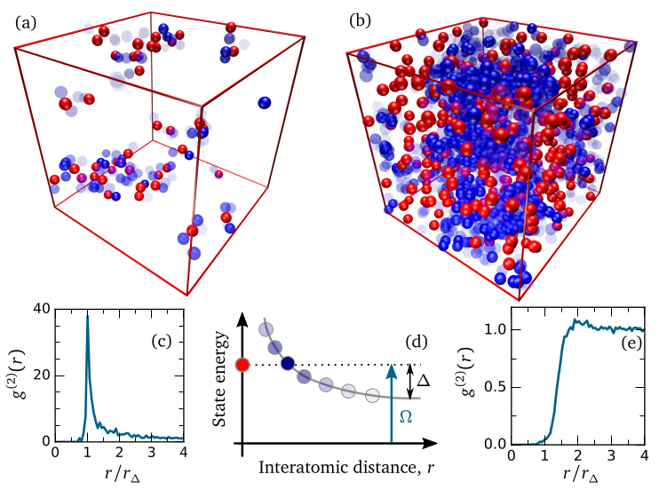
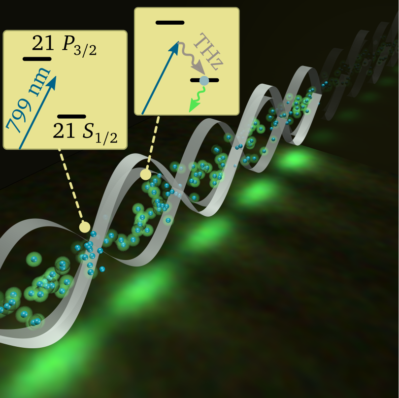
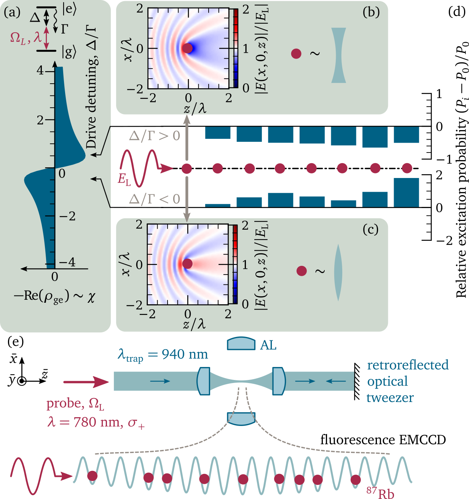
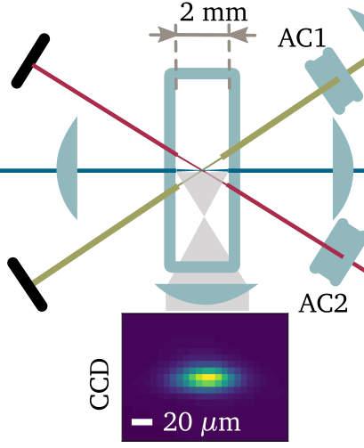
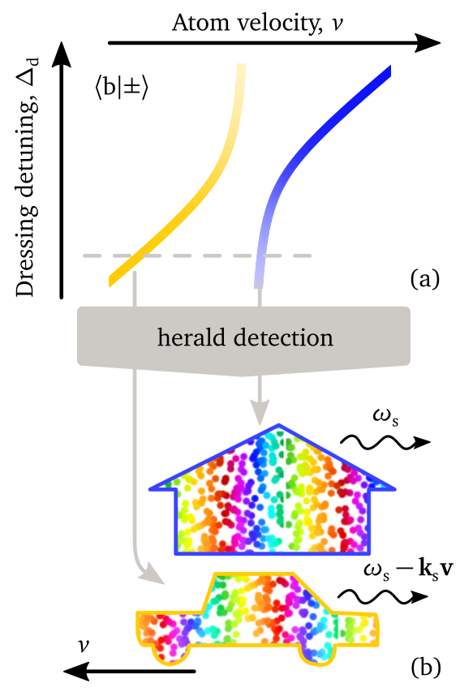

Research#
Non-equilibrium phase transitions#
{kind=link}
Rydberg atoms driven with the laser fields, dissipating through spontaneous emission and forced decay channels, with interactions tunable with static and microwave/terahertz EM fields present ideal platform for exploration of non-equilibrium dynamics in well-controlable way. We recently explored numerically non-equilibrium phase diagrams of these systems, and found that phase diagrams depend qualitatively on the cross-over range between short-range (van der Waals) and long-range (resonant dipole-dipole) interactions. We explored transition between the frozen and hot systems, and found that qualitative changes in dynamics can occur even at \(\mu\mathrm{K}\) temperatures. Finally, we developed new efficient theoretical framework for highly disordered (hot) systems.
Obtained non-equilibrium phase transition diagrams can be explored in current experiments, while the new theoretical framework can help us in describing complex multi-level, multi-component situations, since it offers efficient, consistent and expendable framework.
Reference: Phys. Rev. A 94, 011401(R) (2016)
Rydberg atoms#
Highly excited atoms, in so-called Rydberg states, have strong atom-atom interactions, and long lifetimes. This makes them flexible platform for both quantum engineering on few-excitation level (light storage, single photon non-linearities, quantum logic gates) and exploration of fundamental physics that opens in the many-body regime with many excitations. Given the inherently non-equilibrium and non-linear nature of this system, understanding the phase diagrams, transitions and ordering in them represents one of the major challenges of the modern physics. All of this has a practical spin-offs too, due to the fact that atoms are sensitive probes of EM fields, with constant and indentical properties everywhere in the Universe.
THz imaging#
Atomic vapours provide a medium with properties that are fixed in time, and easily reproduced. This makes them an excellent resource for metrology. In particular, wide range of the transitions between the highly excited atoms corresponds to the terahertz range (0.3-3 THz) in electromagnetic spectrum. Traditionally, sources and detectors in this range have been scarce, since these frequencies are too high for usual semiconductor technology on one hand, and too low for optical technology, on the other.
{kind=link}
Recently we managed to achieve atomic excitation (and subsequent observable fluorescence) proportionally to the THz intensity, allowing mapping of THz field into optical domain. This is achieved by driving off-resonant optical-terahertz Raman transition to the excited states. Excitable atomic medium is prepared with laser ladder driving, which selects atomic velocities, and prevents smearing of fluorescence pattern, allowing sub-wavelength resolution in 2D. Using usual resonant Autler-Townes splitting measurements, and calculated values of dipole matrix elements (that in principle can be fixed to the absolute standards), measurements are calibrated, providing 3D sub-wavelength THz field sampling, and simultaneous measurement along 1D. Importantly, since lifetimes of the excited atomic states are of the order of 10 \(\mu\mathrm{s}\), the refresh rate of the excitable medium is quite fast, allowing real-time maging of dynamic terahertz fields. This is demonstrated imaging fields at 25fps with consumer camera.
Reference: Nature Photonics 11, 40 (2017)
ARC - open source library#
Have you ever wished to be able to quickly perform calculations in Rydberg atomic physics? From quick estimates during meetings, to easy building up of calculations from primitives and data at hand, suitably wrapped in useful tools? From asymptotic C6 coefficients, to Stark maps and spaghetti diagrams, in easily form that facilitates their exploration and use? Something easy to expand for your own research purposes? We have developed ARC - Alkali Rydberg Calculator, a hierarchical Python library of calculation methods and data, precisely with this in mind. Check our code, detailed .html documentation and iPython notebook with examples on GitHub (and contribute expansions!).
Reference: Computer Physics Communications 220, 319 (2017)
ARC 3.0 expands library, adding support for divalent atoms, and a number of functions generally useful for atomic physics calculations.
Reference: Computer Physics Communications 261, 107814 (2021)
Online Atom calculator: atomcalc.org
Quantum Optics#
Focusing light with a quantum needle#
For light manipulation we usually employ objects that consists of millions of atoms, so many of them that we don’t think of individual constituents of mirrors and lenses we use. Recently attention has been drawn to the question how well we can control the light if we have only a few atoms. It was shown that even a single sheet of few dozens of atoms can act as a mirror, which gave rise to a number of proposals for realising mirrors and lenses consisting of atomically thin layers with several dozens of individual quantum emitters. The reason for exceptional efficiency of small atomic ensembles in light control is interference in emission of the individual dipoles. To achieve such a collective enhancement requires control in positioning of the individual quantum emitters with sub-wavelength precision. This sets stringent requirements on experiments, but provides new pathways for light control: if optical dipoles are to be precisely positioned at even shorter distances of < λ /(2π), where λ is probing light wavelength, then one could also exploit cooperative effects stemming from strong dipole-dipole interactions in the ensemble. For example, interactions can give sharp frequency-dependant reflectivity of atomic mirrors, while in 1D arrays of atomic dipoles they can be used for sub-radiant transport in atomically thin wires and enhanced atom-light interaction cross-sections. Theoretical understanding of dipolar ensembles is usually provided with models based on linear coupled dipoles, or small scale full quantum models. This restricts theoretical explanations to weak driving limit of at most single excitation within the system, where classical linear coupled-dipole model is valid, or to small ensembles of up to about dozen atoms, where full quantum calculations can be done.
{kind=link}
In this Letter we explore experimentally and theoretically the ultimate limit of a lens that has a cross section of a single atom under driving of arbitrary strength. Depending on detuning from the atomic resonance [Fig 1.(a)], a single atom locally increases or reduces susceptibility of the medium, acting locally as a convex or concave lens [Fig. 1(b-c)] respectively. While effect of a single atom is small, if one positions several atoms in a chain with sub-wavelength precision, the effect can be collectively enhanced. For light propagating along, such an atomic chain or “quantum needle” will act for negative (positive) detunings as focusing (defocusing) lens, giving rise to increasing (decreasing) probability of excitation of atoms along the chain [Fig. 1(d)]. This collective response of ensemble of individual quantum dipoles is therefore expected to give red detuned shift in the resonance fluorescence of the ensemble.
Reference: Phys. Rev. Lett. 124, 253602 (2020)
Storing light in motion-insensitive atomic states, and spectroscopy of micrometre-sized blobs#
Storing of light field excitation as a collective excitation of atomic clouds is important for quantum memories and gates. The storage time so far is limited by atomic motion that smears out information about the relative phases of the stored excitation within the cloud, preventing succesful retrival of light in well defined spatial output channel. This is especially problem for ledder type excitation to Rydberg states, due to big mismatch of the wavelenghs of light used for excitation.
{kind=link}
In recent work, we proposed new approach for saving information in the form of uniform phase spin-waves, that would be insensitive to motion. We showed that by performing the strong resonant driving of the two excited states, one can get engineered dressed state, that can be used as a proxy in stadard three-level storage and retrival protocols. Adiabatic mapping of excitations, used in EIT based three level storage protocols, can be directly applied in unchanged form in the new scheme. However, generalised scheme uses actually three lasers and four states, allowing one to achieve Doppler free excitation of the uniform phase spin-waves, thus overcoming limitations of storage time due to atomic motion. Additionaly, off-resonant excitation with three lasers, aranged in plane, allows one to selectivily (de)excite atoms in very small volume (diameter >10 \(\mu\mathrm{m}\) ) within bigger cold atomic clouds or vapour cells, which can allow new types of experiments.
Detailed theoretical discussion of possiblities and limitations is followed with proof-of-principle experiment.
Reference: Phys. Rev. A 94, 033840 (2016)
Collective quantum beats: Should I stay or should I go?#
We have embraced motion of the collective atomic excitation, to store single photon in superposition of two states: one nearly stationary, while the other moves away. Observed (collective) quantum beats due to emission of single photon from both of this states demonstrated coherent nature of the storage.
A single excitation in a quantum world doesn’t have to make a decision whether to stay or go. An excitation can be simultaneously stored in two groups of atoms in a thermal atomic vapour, allowing a single photon to both ‘stay’ in stationary atoms, and to ‘go’ with a moving group of atoms.
{kind=link}
Atomic vapours usually have a complex, multi-level atomic structure. Instead of trying to prepare a well-defined initial state of such a system, the researchers realized a new coherent control scheme by isolating atoms in selected states. A strong magnetic field and strong laser dressing enables only two atomic velocity groups to be excited, with well-defined relative phase. Spontaneous emission then heralds the storage of a single collective excitation of the two velocity groups; in the lab frame, one group is stationary while the other is moving.
The coherent nature of the storage is demonstrated by observing Doppler-beating of the single photon simultaneously emitted from the two atomic-velocity groups. The collective nature of the excitation allows readout of the photons in a well-defined direction. The demonstrated interferometric measurement scheme offers possibilities for coherent state manipulation at the single-photon level in atomic vapour cells, and a way of generating tuneable bi-chromatic photons.
Reference: Phys. Rev. Lett. 118, 253601 (2017)
Hyperfine state quantum beats: a new kind of excited state spectroscopy#
Very short laser pulses, or spontaneous decays, can prepare system in superposition of states with well defined relative phase. If this states happen to decay radiatively, we can see signature of this coherent superposition as oscilation of the fluorescence intensity. This so-called quantum beats happen due to interference of multiple decay paths whose relative phases evolve in time due to differences in energies, imposed external drivings and relative atomic motion (if they are are collective, not single-atom based). We have explored this effect to follow dynamics between two excited states driven by coherent laser field, and observed collapses and rivivals of beating.
Reference: Phys. Rev A 90, 033424 (2014)
EIA and EIT in multi-photon excitation schemes#
Different excitation schemes can offer not only technological simplifications, but also new possibilities. We have recently explored four photon Rydberg excitation scheme, and observed absorptions and transparencies due to complex multi-level interference effects (EIT and EIA). This was possible even with a very low laser powers (\(\mu\mathrm{W}\) and nW)
Reference: Optics Letters 40, 5570 (2015)
Atom-surface interactions#
Reference: Phys. Rev. A 100, 022503 (2019)
Laser stabilisation#
Reference: OSA Continuum 1, 4 (2018)
Access to experimental apparatus 3D model fiels for machining.
My PhD thesis#
Here are the links for chapters of my thesis “Rydberg atom ensembles under dephasing and dissipation: from single- to many-body dynamics” (Durham University, 2017)
Introduction, Overview of dephasing and dissipation mechanishms and their impact on dynamics. Short history of Rydberg physics.
Rydberg atomic states: energy level structure and dynamics. Check here for more details about ARC project, atomic structure, Rydberg interactions and THz imaging.
Spin-wave motion. Check here for schemes that provide light storage that is insensitive to motion (uniform-phase spin-waves) in ladder storage schemes, and for quantum beat fenomena, both signle-atom qunatum beats, and collective quantum beats.
Driven-dissipative systems with power-law interactions. Check here for more details about non-equilibrium transitions of driven-dissipative systems, occurance of bistability, and impact of spin/atom motion on the non-equilibrium phase diagrams.
Appendix A3 contains derivation of Ensemble Averaged Mean Field, that gives analytical solution (equations A.15 and 4.10) for driven-dissipative dynamics of interacting spins that becomes exact solution in the llimit of strong mixing of spins due to fast motion.